专题4.1 线段、射线、直线
专题4.1 线段、射线、直线

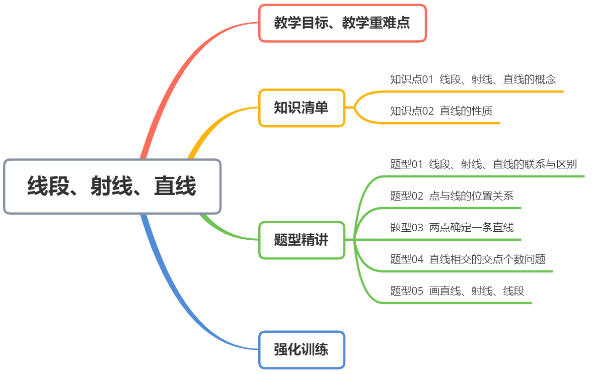

教学目标 | 1. 结合现实情境理解线段、射线、直线的概念，明确三者的联系与区别，会用规范方式表示。 2. 掌握“两点确定一条直线”的几何事实，能结合实例解释其应用。 3. 能运用相关知识解决简单实际问题，通过观察概括发展抽象思维与表达能力。 |
教学重难点 | 1.重点 （1）核心是线段、射线、直线的概念辨析，包括端点个数、延伸性等特征及规范表示方法。 （2）关键是理解并掌握“两点确定一条直线”的基本事实及其在生活中的应用。 2.难点 （1）难点在于准确区分射线的表示方法，因端点和延伸方向不同，相同字母表示的射线可能不同。 （2）难点在于灵活运用概念和性质解决计数（如数射线、线段条数）等实际问题。 |

知识点01 线段、射线、直线的概念
1.线段的表示也有两种：一个小写字母或用端点的两个大写字母.但前面必须加“线段”两字，如：线段a；线段AB.
2.射线的表示同样有两种：一个小写字母或端点的大写字母和射线上的要给大写字母，前面必须加“射线”两字
3.直线的表示有两种：一个小写字母或两个大写字母.但前面必须加“直线”两字，如：直线 ；直线m，直线AB；直线CD
；直线m，直线AB；直线CD
基本概念：
名称 | 直线 | 射线 | 线段 |
图形 |
|
|
|
端点个数 | 无 | 一个 | 两个 |
表示法 | 直线 直线AB（BA） | 射线 射线AB | 线段 线段AB（BA） |
作法叙述 | 作直线 作直线AB | 作射线 作射线AB | 作线段 作线段AB 连接AB |
延长 | 向两端无限延长 | 向一端无限延长 | 不可延长 |

【即学即练1】
1．下列说法错误的是（ ）
A． 直线l经过点A B．
直线l经过点A B． 点C在线段
点C在线段 上
上
C． 射线
射线 与线段有公共点 D．
与线段有公共点 D． 直线a，b相交于点A
直线a，b相交于点A
2．根据如图所示的图形填空：
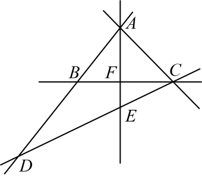
(1)点B在直线 _________，点C在直线_________；
_________，点C在直线_________；
(2)点E是直线与_________直线_________的交点，直线 与直线
与直线 相交于点_________；
相交于点_________；
(3)过点A的直线有_________条，分别是__________________．
知识点02 直线的性质
经过两点有一条直线，并且只有一条直线.简单地：两点确定一条直线. 两条直线相交，只有一个交点.
【即学即练2】
1．如图，建筑工人砌墙时，经常先在两端立桩拉线，然后沿着线砌墙，读用所学的数学知识解释它这样操作的原因是
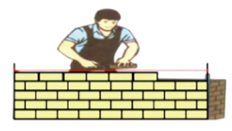

题型01 线段、射线、直线的联系与区别
【典例1】（24-25七年级上·河南新乡·阶段练习）下列直线的表示方法正确的是（ ）
A． B．
C． D．
D．
【变式1】（24-25七年级上·全国·课后作业）如图，下列说法错误的是（ ）．
A．图中共有2条线段
B．直线 与直线
与直线 表示的是同一条直线
表示的是同一条直线
C．射线与射线表示的是同一条射线
D．线段与线段 表示的是同一条线段
表示的是同一条线段
【变式2】（24-25七年级上·全国·随堂练习）下列说法正确的是（ ）
A．射线和射线 是同一条射线
是同一条射线
B．延长线段和延长线段的含义是相同的
C．延长直线
D．直线与直线是同一条直线
【变式3】（24-25六年级下·山东泰安·期末）下列说法：（1）两点确定一条直线；（2）画一条射线，使它的长度为 ；（3）线段和线段是同一条线段；（4）射线和射线是同一条射线；（5）直线和直线是同一条直线．其中错误的有（ ）个
；（3）线段和线段是同一条线段；（4）射线和射线是同一条射线；（5）直线和直线是同一条直线．其中错误的有（ ）个
A．1个 B．2个 C．3个 D．4个
题型02 点与线的位置关系
【典例2】（24-25七年级上·河北唐山·期末）正方形网格中，直线 经过的点是（ ）
经过的点是（ ）

A．点 B．点
B．点 C．点
C．点 D．点
D．点
【变式1】（24-25七年级上·重庆渝中·期末）如图，直线 与直线
与直线 相交于点
相交于点 ，下列说法错误的是（ ）
，下列说法错误的是（ ）
A．点在直线外 B．点 在直线上
在直线上
C．点在线段 的反向延长线上 D．直线与线段相交于点
的反向延长线上 D．直线与线段相交于点
【变式2】（2024七年级上·全国·专题练习）如图，下列说法中，错误的是（ ）

A．点B在直线 上
上
B．点A在直线 外
外
C．点C在线段 上
上
D．点M在线段 的延长线上
的延长线上
【变式3】（24-25七年级上·河北秦皇岛·期末）如图，下面说法中错误的是（ ）

A．点B在直线上 B．点A在直线外
C．点C在线段上 D．点M在线段上
题型03 两点确定一条直线
【典例3】（25-26七年级上·全国·期末）如图，用两个钉子，就可以把一个横排挂钩固定在墙上，这样做的依据是 ．

【变式1】（24-25七年级上·贵州贵阳·阶段练习）李明值日时，发现桌子不整齐，他想了一下，先把每一列最前和最后的课桌摆好，然后再依次摆中间的课桌，一会儿就把课桌摆整齐了．这是因为 ．
【变式2】（24-25六年级下·山东烟台·期末）小明在设计黑板报时，想在黑板上画一条笔直的参照线，由于尺子不够长，他想出了如下办法：①在一根长度合适的毛线上涂满粉笔末；②由两个同学分别按住毛线的两端，并绷紧；③捏起毛线后松开，便可在黑板上弹出一条笔直的参照线．上述“画参照线”方法的依据是 ．
【变式3】（24-25七年级上·河南平顶山·期末）墨斗是中国传统木工行业画直线的常用工具．如图，木工师傅锯木料时，一般先在木板上画出两个点，从墨斗中拉出墨线一端固定在一个点，另一端固定在另一点，绷紧并提起墨线中段，过这两点就弹出一条墨线，木工师傅这样做的道理是： ．

题型04 直线相交的交点个数问题
【典例4】（24-25七年级下·甘肃陇南·期末）如图，同一平面中，三条直线交于同一点，不经过交点再画一条直线 ，则直线和原来三条直线最少有 个交点．
，则直线和原来三条直线最少有 个交点．

【变式1】（24-25七年级上·甘肃庆阳·期末）如图，两条直线相交，有1个交点，三条直线相交最多有3个交点，四条直线相交最多有6个交点，则七条直线相交最多有 个交点．

【变式2】（24-25七年级下·全国·假期作业）一平面内，3条直线两两相交，最多有3个交点；4条直线两两相交，最多有6个交点；5条直线两两相交，最多有10个交点；…；那么，10条直线两两相交，最多有 个交点．
【变式3】（2024七年级上·全国·专题练习）观察下列图形，阅读下面相关文字并填空：
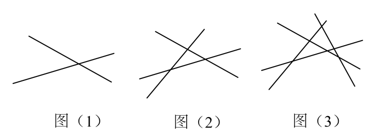
（1）在同一平面内，两条直线相交最多有1个交点，3条直线相交最多有 个交点，4条直线相交最多有 个交点，……，像这样，8条直线相交最多有 个交点，n条直线相交最多有 个交点；
（2）在同一平面内，1条直线把平面分成2部分，两条直线最多把平面分成4部分，3条直线最多把平面分成 部分，4条直线最多把平面分成 部分，……，像这样，8条直线最多把平面分成 部分，n条直线最多把平面分成 部分．
题型05 画直线、射线、线段
【典例5】（24-25七年级上·全国·随堂练习）如图所示，已知：四点A，B，C，D．根据下列语句，画出图形．

(1)画直线 ，线段
，线段 ．
．
(2)画射线 ，相交于点O．
，相交于点O．
【变式1】（24-25七年级上·贵州黔东南·期末）已知三点A，B，C，请用尺规按要求完成下列作图．（保留画图痕迹）
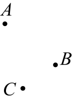
(1)画直线．
(2)画射线．
(3)连接并延长到D，使得．
【变式2】（24-25七年级上·江苏无锡·阶段练习）如图，平面上有四个点
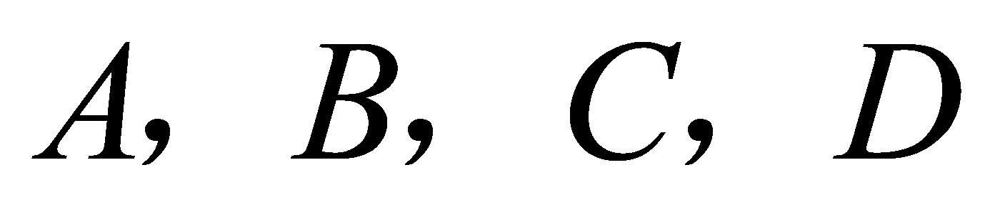
，按照下列语句画图：
(1)画射线，直线 交于E点；
交于E点；
(2)画线段，并将其反向延长至F，使得 ；
；
(3)连接，在上找一点P，使得 最短．
最短．
【变式3】（24-25七年级上·江苏南通·阶段练习）如图，平面上有五个点 ．按下列要求画出图形．
．按下列要求画出图形．

(1)连接 ；
；
(2)画直线交于点M；
(3)画射线；
(4)请在平面上找一点O，使它与点B，C，D，E的距离之和最小（保留作图痕迹）．

一、单选题
1．（25-26七年级上·全国·课后作业）经过三点中的任意两点，可作的直线（ ）
A．只有一条 B．一定有三条 C．有三条以上 D．有一条或者三条
2．（24-25七年级上·湖南株洲·期末）经过刨平的木板上的 两个点，能弹出一条笔直的黑线，而且只能弹出一条黑线，能解释这一实际应用的数学知识是（ ）
两个点，能弹出一条笔直的黑线，而且只能弹出一条黑线，能解释这一实际应用的数学知识是（ ）
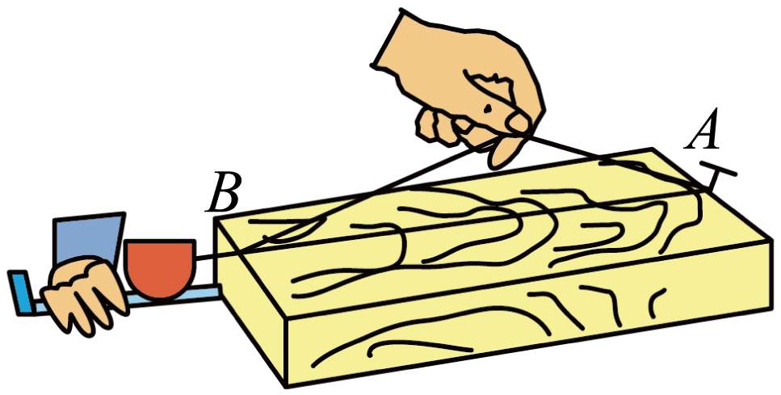
A．两点确定一条直线
B．过一点，有无数条直线
C．两点之间线段的长度叫做这两点之间的距离
D．两点之间的所有连线中，线段最短
3．（20-21七年级上·山东聊城·期中）如图所示，下列结论正确的是（ ）
A．共有射线 10条，直线 10条 B．共有线段 10条，射线5条
C．共有线段 10条，直线1条 D．共有线段 10条，直线2条
4．（24-25七年级下·山东临沂·阶段练习）按下面语句画图：点M在直线a上，也在直线b上，但不在直线c上，直线a，b，c两两相交，图中正确的是（ ）
A． B．
B． C．
C．
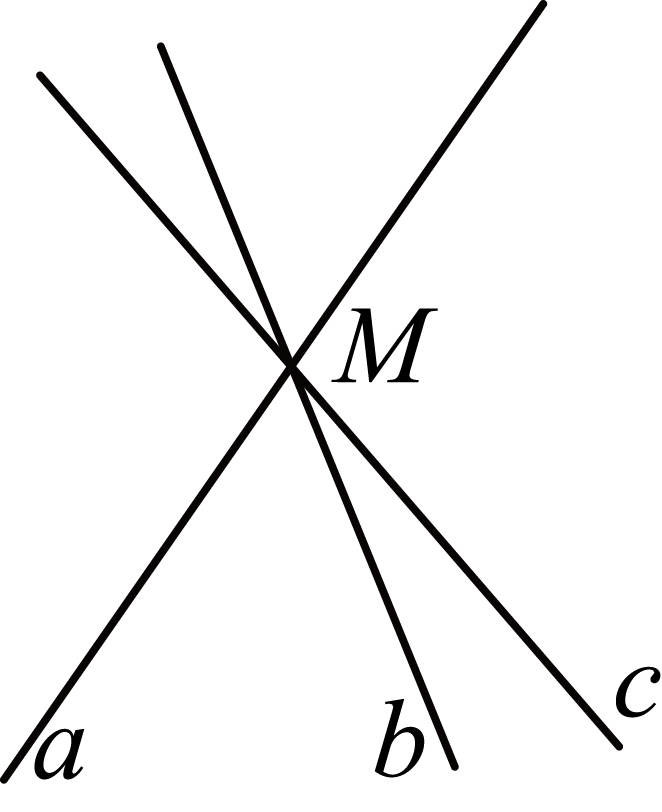
D．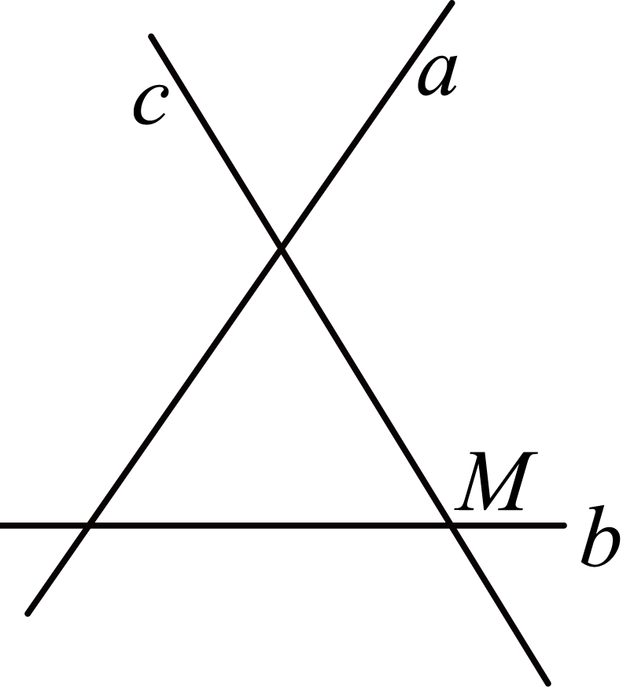
5．（24-25七年级上·全国·课后作业）观察图形，下列说法正确的个数是（ ）

（1）直线 和直线
和直线 是同一条直线；（2）射线
是同一条直线；（2）射线 和射线
和射线 是同一条射线；（3）线段和线段
是同一条射线；（3）线段和线段 是同一条线段．
是同一条线段．
A．0个 B．1个 C．2个 D．3个
6．（24-25七年级上·山东济宁·期末）在同一平面内，我们把 条直线中任一条直线都和其余的直线相交叫做直线两两相交．两条直线相交，最多有1个交点；三条直线两两相交，最多有3个交点；四条直线两两相交，最多有6个交点．．．按照此规律，条直线两两相交，最多交点个数是（ ）
条直线中任一条直线都和其余的直线相交叫做直线两两相交．两条直线相交，最多有1个交点；三条直线两两相交，最多有3个交点；四条直线两两相交，最多有6个交点．．．按照此规律，条直线两两相交，最多交点个数是（ ）
A． B．
B． C．
C．
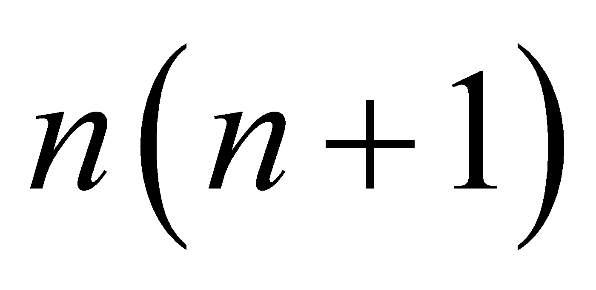
D．
二、填空题
7．（24-25七年级上·全国·课后作业）如图，点A在直线l ，点B在直线l ．
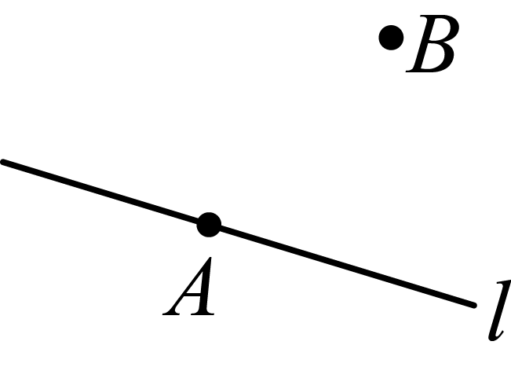
8．（24-25七年级下·广东深圳·开学考试）挖地基时在地上画线，先在地上钉两根木桩就可以拉一条线，说明原理 ．
9．（24-25七年级下·湖南长沙·开学考试）如图，已知四条线段a，b，c，d中的一条与挡板另一侧的线段 在同一直线上，请借助直尺判断该线段是
在同一直线上，请借助直尺判断该线段是
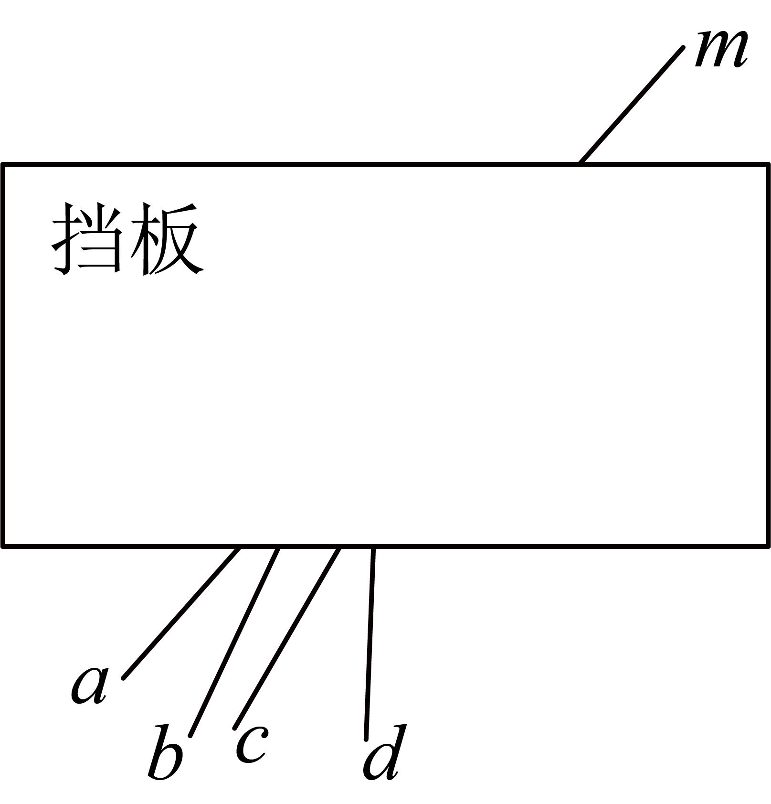
10．（2025七年级下·全国·专题练习）平面内有四条直线，两两相交，交点最多有m个，最少有n个，则 ．
．
11．（24-25七年级上·吉林长春·阶段练习）如图，有下列结论：
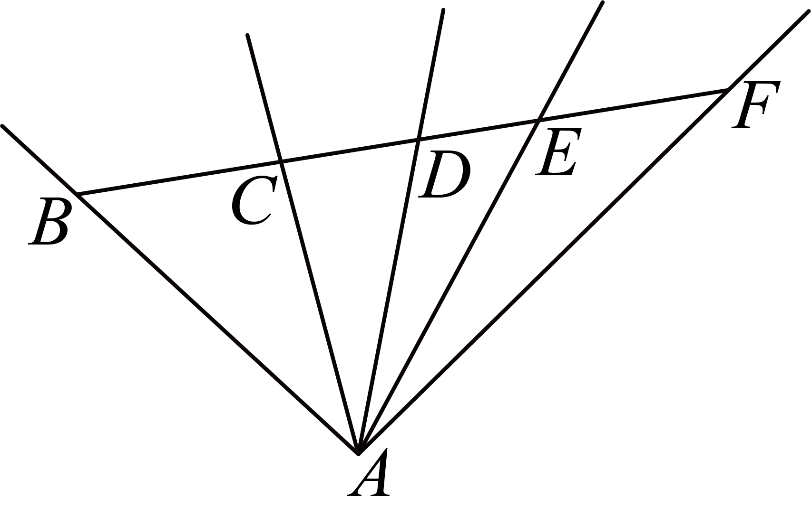
①以点 为端点的射线共有5条； ②以点
为端点的射线共有5条； ②以点 为端点的线段共有4条；
为端点的线段共有4条；
③射线 和射线
和射线 是同一条射线； ④直线
是同一条射线； ④直线 和直线
和直线 是同一条直线．
是同一条直线．
以上结论正确的是 ．（填序号）
12．（24-25七年级上·全国·课后作业）如图A，B，C，D为直线l上的四个点，则图中共有 条线段，它们分别是 ，图中共有 条射线．若直线l上有五个点，则共 条线段， 条射线．若直线l上有六个点，则共有 条线段， 条射线．
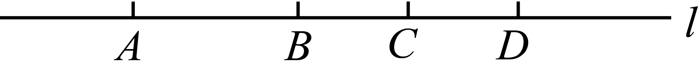
三、解答题
13．（24-25七年级上·四川泸州·阶段练习）如图，已知A、 、
、 、四点，请按下列要求画图：（不写作法，保留作图痕迹）．
、四点，请按下列要求画图：（不写作法，保留作图痕迹）．
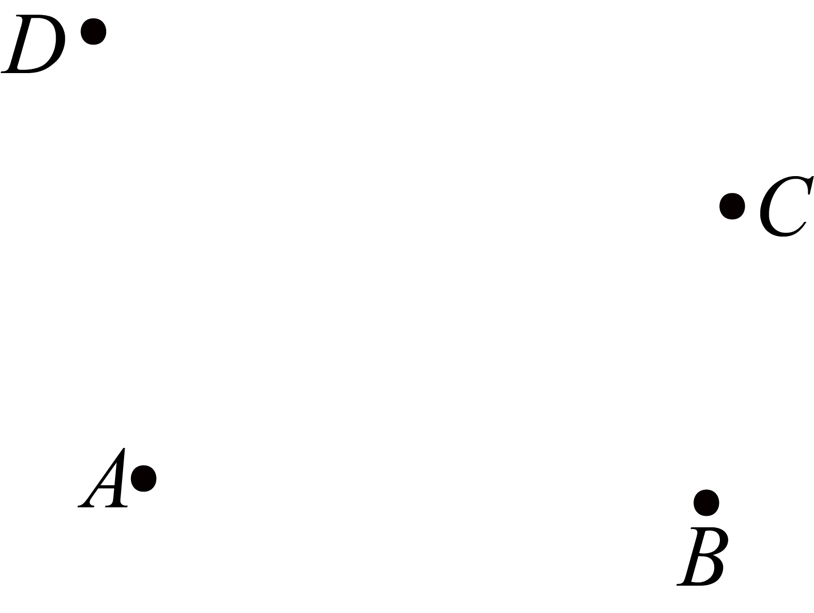
(1)画直线；
(2)画射线；
(3)画线段 ，在上求作点
，在上求作点 ，使点到A、两点的距离之和最小．
，使点到A、两点的距离之和最小．
14．（24-25六年级下·山东淄博·期中）如图，平面内有，，，四点，利用直尺，按照下面的要求完成作图．
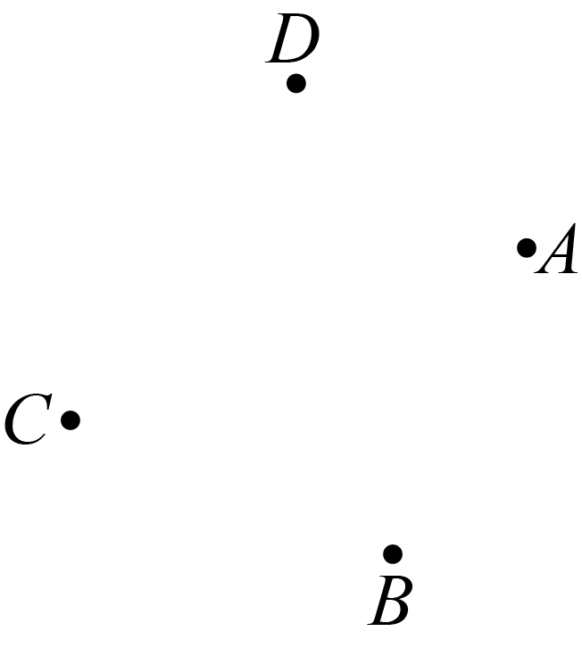
(1)连接；
(2)作直线；
(3)作射线；
(4)作出点，使 的值最小．
的值最小．
15．（24-25七年级上·贵州贵阳·阶段练习）如图，按要求完成画图及作答：
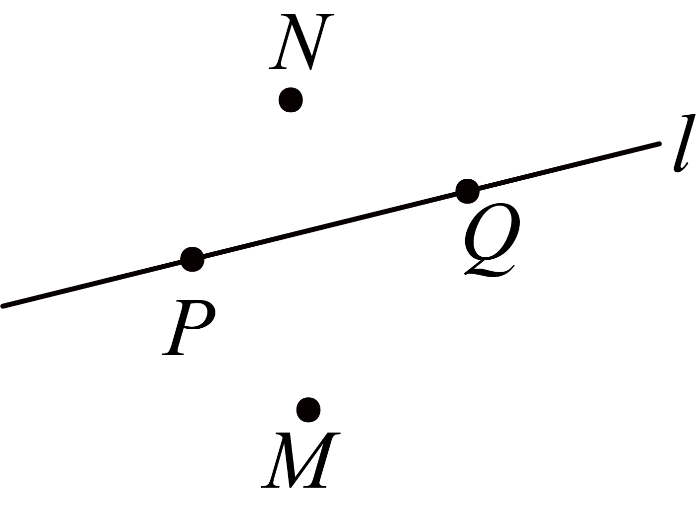
(1)用适当的语句表述点 与直线
与直线 的关系：_________；
的关系：_________；
(2)画射线 ，画直线；
，画直线；
(3)连接，并反向延长至点，使．
16．（23-24七年级上·江苏南通·期末）【阅读思考】
如表反映了平面内直线条数与它们最多交点个数的对应关系．
图形 |
|
| 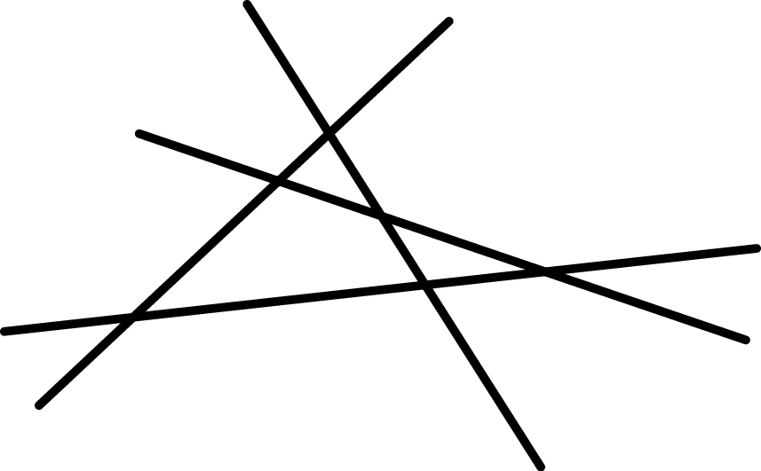 | … |
直线条数 | 2 | 3 | 4 | … |
最多交点个数 | 1 | 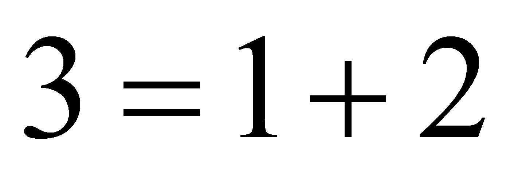 | 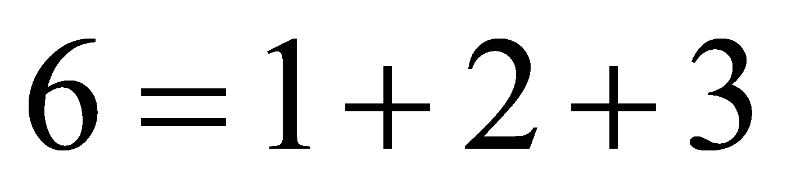 | … |


【延伸探究】
（1）按此规律，5条直线相交，最多有______个交点；
（2）平面内的8条直线任意两条都相交，交点数最多有x个，最少有y个，请求出
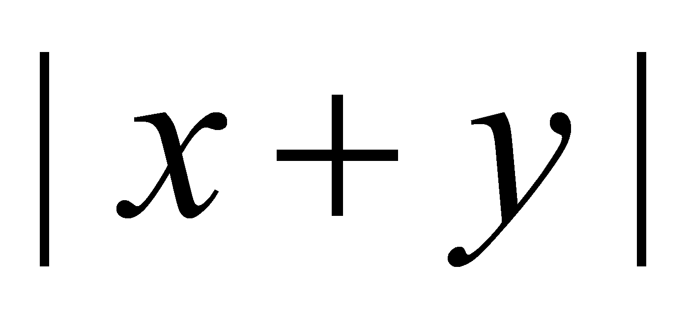
的值；【实践应用】
（3）学校七年级6个班级举行足球联赛，比赛采用单循环赛制（即每两支队伍之间赛一场），当比赛到某一天时，统计出七1，七2，七3，七4，七5五个班级已经分别比赛了5，4，3，2，1场球，请直接写出没有与七6班比赛的班级，并求出还剩的比赛总场数．